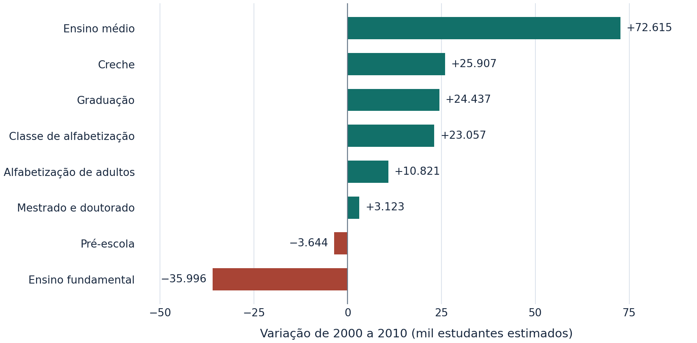
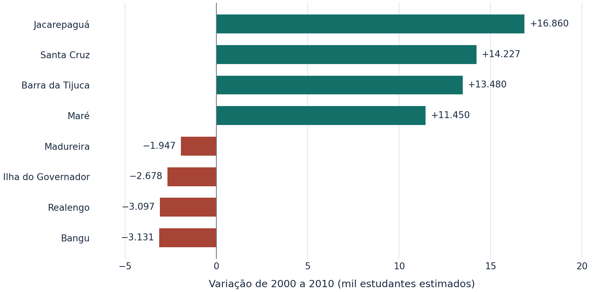
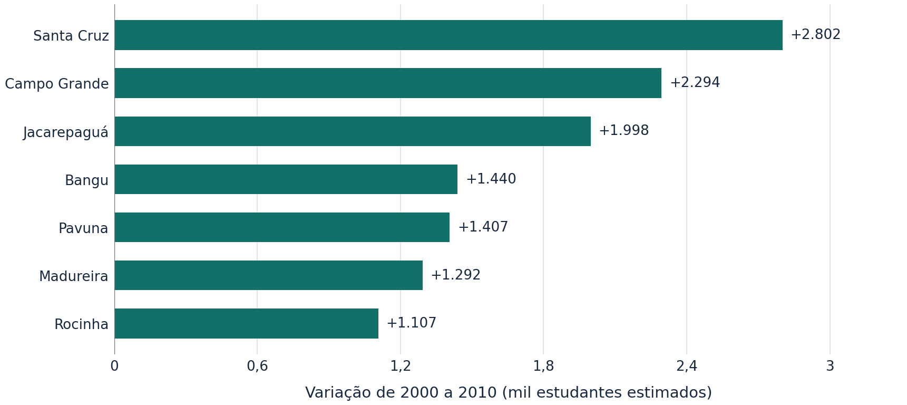

Resumo
Este estudo examina como o número estimado de estudantes da rede pública no município do Rio de Janeiro mudou entre 2000 e 2010. A análise usa a Tabela 892 do Data.Rio, baseada nas amostras dos Censos Demográficos do IBGE. Um fluxo de processamento em Python organizou as duas abas em formato tabular aberto, preservou o significado de valores indisponíveis e zeros e harmonizou as modalidades de ensino. A comparação territorial incluiu 31 Regiões Administrativas com registros nos dois anos e examinou Penha e Vigário Geral em um recorte complementar. O total municipal passou de 1.004.604 para aproximadamente 1.129.833 estudantes, aumento de 12,5%. Entre os níveis comparáveis, o ensino médio teve o maior ganho absoluto, de cerca de 72.615 estudantes. A estimativa para o ensino fundamental caiu 35.996. O número de estudantes em creche cresceu 118,8% no município, com as maiores altas absolutas em Santa Cruz, Campo Grande e Jacarepaguá entre as regiões comparadas. Os resultados descrevem mudanças nos volumes estimados. Uma avaliação da cobertura escolar exigiria relacionar as estimativas à população nas faixas etárias pertinentes.
Palavras-chave educação pública, Censo Demográfico, regiões administrativas, creche, Rio de Janeiro.
1. Introdução
O total de estudantes da rede pública ajuda a descrever a escala do atendimento educacional. A desagregação por nível de ensino e território revela quais componentes aumentaram ou diminuíram entre os dois levantamentos. O recorte municipal permite observar essas mudanças dentro da mesma cidade.
A Tabela 892 reúne estimativas de estudantes por nível e modalidade de ensino. Este estudo usa os valores municipais publicados e compara as Regiões Administrativas com dados disponíveis nos dois anos, levando em conta a diferença de recorte entre Penha e Vigário Geral. Fonte dos dados.
- RQ1. Como o número estimado de estudantes da rede pública mudou no município entre 2000 e 2010, por nível de ensino comparável?
- RQ2. Quais Regiões Administrativas tiveram os maiores aumentos e quedas no total de estudantes entre os dois censos?
- RQ3. Em quais Regiões Administrativas se concentrou o crescimento do número estimado de estudantes em creches públicas?
2. Metodologia e pipeline de dados
A fonte é um arquivo Excel com as abas de 2000 e 2010, produzidas a partir das amostras dos respectivos Censos Demográficos do IBGE. A unidade de observação após a transformação é uma estimativa por ano, território, nível e modalidade de ensino. Os valores decimais de 2010 foram preservados nos cálculos e arredondados para a apresentação. Tabela 892.
O pipeline lê os cabeçalhos mesclados com pandas e xlrd, normaliza nomes e conserva a posição de origem de cada célula. O marcador ... de 2000 gera um valor ausente. O marcador - de 2010 gera zero, conforme a nota da aba. O arquivo tratado é um CSV UTF-8 comprimido com gzip.
from src.etl import carregar_tabela, salvar_tabela
from src.analise import agregar_niveis, comparar_municipio
dados = carregar_tabela()
salvar_tabela(dados)
niveis = agregar_niveis(dados)
variacao_municipal = comparar_municipio(niveis)Nas comparações por nível, a análise soma as modalidades do fundamental e do médio em cada ano. Mestrado e doutorado são agregados em 2010 para corresponder à categoria conjunta de 2000. Pré-vestibular e especialização ficam na base tratada, cada qual com registro em um dos anos. O total municipal vem da linha oficial. Em 2000, a soma dos totais das RAs é 196 estudantes menor que esse total, diferença compatível com a nota da fonte sobre dados amostrais.
As abas trazem 32 e 33 RAs. Vigário Geral consta em 2010 como RA própria. Uma publicação municipal com a população do Censo 2000 agrega à RA Penha os quatro bairros identificados como Vigário Geral no Plano Diretor de 2011. Com base nessa diferença de recorte, o ranking usa 31 RAs e a análise complementar testa o agrupamento de Penha e Vigário Geral em 2010. A equivalência territorial desse agrupamento é uma hipótese. Recorte municipal do Censo 2000 · Plano Diretor de 2011.
A variação absoluta é a estimativa de 2010 menos a de 2000. A variação percentual divide essa diferença pela estimativa de 2000, quando ela é positiva, e multiplica o resultado por 100. As comparações são descritivas.
3. Resultados e discussão
Deslize os gráficos e as tabelas na horizontal para ver todos os valores.
RQ1. Aumento municipal liderado pelo ensino médio
O total municipal aumentou 12,5%, cerca de 125,2 mil estudantes. O ensino médio, somadas as modalidades, teve o maior ganho absoluto (+72,6 mil). O fundamental permaneceu como o nível com maior volume em 2010 e registrou a maior queda absoluta (−36,0 mil). A alfabetização de adultos teve a maior alta proporcional (+177,7%), a partir de uma estimativa de 6.091 estudantes em 2000.

| Nível | 2000 | 2010 | Diferença | Variação |
|---|---|---|---|---|
| Total publicado | 1.004.604 | 1.129.833 | +125.229 | +12,5% |
| Creche | 21.799 | 47.706 | +25.907 | +118,8% |
| Pré-escola | 65.921 | 62.277 | −3.644 | −5,5% |
| Classe de alfabetização | 44.782 | 67.839 | +23.057 | +51,5% |
| Alfabetização de adultos | 6.091 | 16.912 | +10.821 | +177,7% |
| Ensino fundamental | 613.400 | 577.404 | −35.996 | −5,9% |
| Ensino médio | 186.467 | 259.082 | +72.615 | +38,9% |
| Graduação | 54.998 | 79.435 | +24.437 | +44,4% |
| Mestrado e doutorado | 8.981 | 12.104 | +3.123 | +34,8% |
As categorias comparáveis são um subconjunto dos níveis publicados. Os totais e as diferenças foram calculados com os valores de origem e arredondados separadamente.
RQ2. Jacarepaguá liderou as altas entre as 31 RAs
Houve aumento no total estimado em 23 RAs e queda em 8. Jacarepaguá (+16.860), Santa Cruz (+14.227) e Barra da Tijuca (+13.480) tiveram os maiores ganhos absolutos. Bangu apresentou a maior redução absoluta (−3.131), seguido de Realengo (−3.097). Em termos percentuais, Barra da Tijuca liderou as altas (+73,7%) e Ilha do Governador teve a maior redução (−8,1%).

A variação mediana foi de +2.334 estudantes. Os 50% centrais ficaram entre −95 e +6.501, o que mostra a dispersão dos resultados regionais. Na análise complementar, Penha em 2000 teve 55.607 estudantes estimados. Em 2010, a soma de Penha e Vigário Geral foi de aproximadamente 65.462 (+17,7% sob a hipótese de cobertura equivalente).
RQ3. Crescimento de creche em todas as RAs comparadas
O número estimado de estudantes em creches públicas subiu 118,8% no município. Entre as 31 RAs, os maiores acréscimos absolutos foram em Santa Cruz (+2.802), Campo Grande (+2.294) e Jacarepaguá (+1.998). Juntas, as três responderam por 29,2% da soma dos aumentos nas RAs comparadas. Todas as 31 tiveram alta.

Os aumentos apontam onde o volume estimado de atendimento cresceu mais. A cobertura de creche por RA dependeria também do tamanho da população na faixa etária atendida, que exigiria uma base complementar.
Explorar os dados das 31 RAs
| Região Administrativa | 2000 | 2010 | Diferença | Variação |
|---|
4. Conclusão
Entre os dois censos, aumentou o total estimado de estudantes da rede pública do Rio de Janeiro. O ensino médio teve o maior ganho absoluto entre os níveis comparáveis. Jacarepaguá concentrou a maior alta regional no total e Santa Cruz a maior alta em creche. As diferenças entre RAs mostram que a mudança municipal se distribuiu de forma desigual pelo território.
A interpretação depende de dois levantamentos amostrais, da classificação dos níveis e da cobertura geográfica. A análise estima volumes e tem alcance descritivo. Um estudo posterior pode incorporar faixas etárias, validar limites das RAs com bases geográficas históricas e estimar intervalos de confiança a partir do desenho amostral.
5. Disponibilidade dos dados e princípios FAIR
A planilha original está disponível no Data.Rio com licença CC BY 4.0. O pacote do projeto inclui a planilha original, o CSV processado, o dicionário de dados, o notebook e os scripts em Python. Ficha do Data.Rio · Planilha oficial.
- Localizável (Findable)
- O README registra autoria, disciplina, palavras-chave, a identificação da Tabela 892 e o endereço de origem.
- Acessível (Accessible)
- A fonte é pública e os scripts leem a cópia original incluída no projeto sem credenciais.
- Interoperável (Interoperable)
- O CSV UTF-8 e o dicionário Markdown registram tipos, unidades, campos e marcadores de origem.
- Reutilizável (Reusable)
- O código está licenciado sob MIT e a atribuição da base CC BY 4.0 está documentada. As dependências de análise têm versões fixadas.
Com Python 3.12, use os comandos abaixo para clonar o repositório e reproduzir a base processada e as visualizações. No Windows, use .venv\Scripts\python.exe no lugar de .venv/bin/python.
git clone URL_DO_REPOSITORIO estudantes-rede-publica-rio
cd estudantes-rede-publica-rio
python -m venv .venv
.venv/bin/python -m pip install -r requirements.txt
.venv/bin/python -m src.analise6. Referências
- RIO DE JANEIRO (Município). Número de estudantes da rede pública por nível de ensino, segundo as Regiões Administrativas (RA) do Município do Rio de Janeiro, em 2000/2010. Tabela 892. Data.Rio, 2018. Atualização em 28 set. 2023. Dados das amostras dos Censos Demográficos 2000 e 2010 do IBGE. Acesso em 12 nov. 2026. Disponível no Data.Rio.
- RIO DE JANEIRO (Município). Secretaria Municipal de Saúde e Defesa Civil. Número de óbitos de leptospirose por Áreas de Planejamento, Regiões Administrativas e Bairros, Município do Rio de Janeiro, 1996–2009. Rio de Janeiro, 2010. Tabela com a distribuição territorial da população do Censo 2000. Acesso em 12 nov. 2026. Documento oficial.
- RIO DE JANEIRO (Município). Lei Complementar nº 111, de 1º de fevereiro de 2011. Plano Diretor de Desenvolvimento Urbano Sustentável do Município do Rio de Janeiro. Anexo de Áreas de Planejamento, Regiões Administrativas e bairros. Rio de Janeiro, 2011. Acesso em 12 nov. 2026. Documento oficial.
- WILKINSON, Mark D. et al. The FAIR Guiding Principles for scientific data management and stewardship. Scientific Data, v. 3, art. 160018, 2016. DOI 10.1038/sdata.2016.18.
- PANDAS DEVELOPMENT TEAM. pandas documentation. Acesso em 12 nov. 2026. Documentação.
- MATPLOTLIB DEVELOPMENT TEAM. Matplotlib documentation. Acesso em 12 nov. 2026. Documentação.